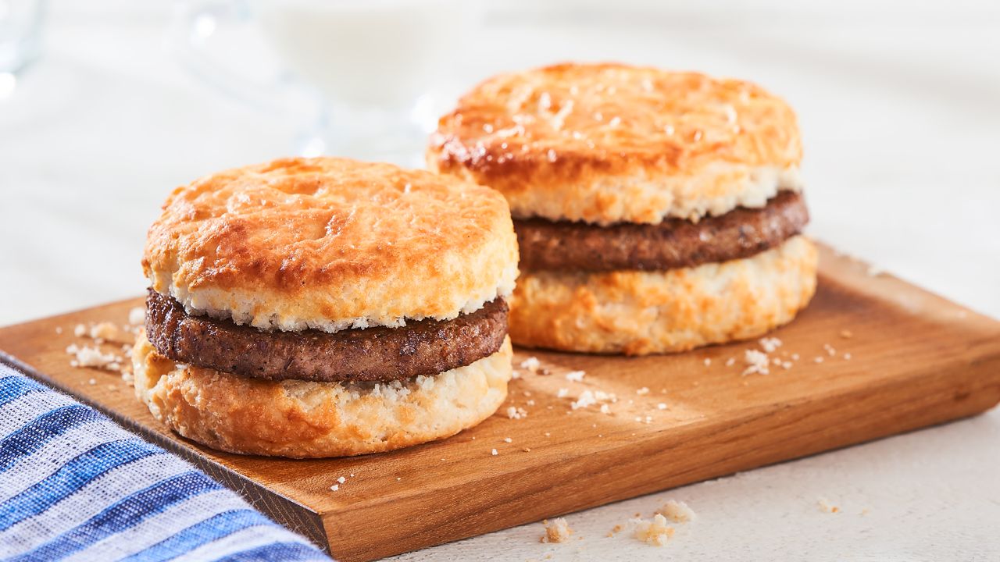

What are Biscuits?
Easy Cheese and Sausage Biscuits! Easy buttermilk breakfast biscuits loaded up with sharp cheddar cheese, crumbled sausage bits and diced jalapeno.
These biscuits are hearty enough to be a full meal! Buttermilk drop biscuits are dressed up with all the fixings to make a complete meal!
These biscuits come together quick and easy and are better than those that you would find at a local donut shop!
Ingredients
- 1 jalapeno deseeded and minced
- 1 pound pork sausage mild
- 1½ cup all purpose flour
- 1½ tsp baking powder
- ¼ tsp baking soda
- ½ tsp salt
- 5 tbsp unsalted butter cold
- 2 cups sharp cheddar cheese shredded
- ¾ cup buttermilk
How to make Biscuits
- In a medium size skillet cook the sausage and the jalapeño together until the sausage is cooked through and the jalapeño is softened.
- Preheat the oven to 425℉ and line a large baking sheet with parchment paper or a silicone baking sheet.
- In a large mixing bowl add the flour, baking powder, baking soda, salt and stir with a fork to combine.
- Cut the cold butter into small cubes and add to the flour mixture. Using a pastry blender, forks, or a food processor,
cut the butter into the flour until there are no pieces bigger than a pea.
- Add in the cooked sausage, jalapeño, and the cheese. Stir to combine.
- Pour in the buttermilk and stir until mixed.
- Using a large spoon scoop the batter and place on the baking sheet. Leaving the batter not neatly rounded gives a more textured appearance to the biscuits
when baked. Batter will make about 8 large biscuits.
- Bake for about 15-16 minutes until the biscuits are baked through. Allow to cool several minutes then remove from the pan and continue to cool on a wire cooling rack.